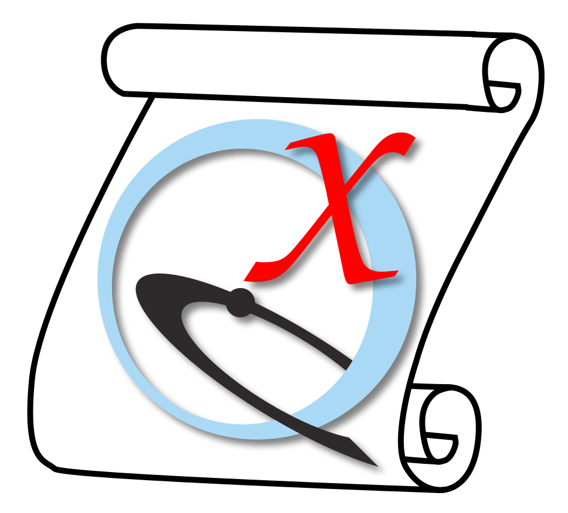

- this preset also turns silhouettes on;
for silhouettes off, use
the Silhouettes checkbox in Lighting (see below),
or toolbar icon
 ,
or the command
graphics silhouettes false
,
or the command
graphics silhouettes false

The Lighting tool allows interactively adjusting several settings related to illumination. Lighting and material controls are shown together beside a sphere for previewing their effects:
Depth-cueing controls are in Side View. These and additional related parameters can be adjusted with the commands lighting and material, as well as by clicking icons in the Graphics Toolbar.
The Lighting tool can be opened from the Depiction section of the Tools menu and manipulated like other panels (more...).
The ChimeraX scene can have two directional lights, key and fill, plus ambient lighting. The key light is often the dominant source and can cast shadows; the first set of intensity, direction, and color values reported in the Log refer to this light. The fill light serves as a secondary directional source to improve the visibility of regions that would otherwise be dark. Regardless of whether shadows are on, the directional lights cause “shading,” where the brightness of an object varies based on the angle between the light direction and the surface normal. The key light also produces directionally dependent specular highlights. The ambient lighting is an approximation to omnidirectional illumination. Shadows cast from multiple uniformly distributed directions can produce ambient shadowing, or “ambient occlusion.” See also: lighting
Choices for lighting Shadow preset:
The directional lights can be moved by dragging the color-coded solid arrows on the sphere: orange for key light, blue for fill light.
Clicking Default lighting changes to the simple preset and restores default lighting directions, colors, and material parameters by running lighting default and material default. Silhouettes are preserved. The button restores factory defaults, which may differ from the lighting chosen by initial smart styling.
The material controls adjust how objects reflect light. The Material preset menu runs the corresponding material command: default, shiny, dull, or chimera. The menu shows -- after individual material settings are changed.
Numeric material settings can be adjusted with sliders or typed into the adjacent fields. Lighting and material controls also update when commands are used.
Depth-cueing controls have moved to Side View, alongside the clipping planes that determine the extent of the shading ramp.